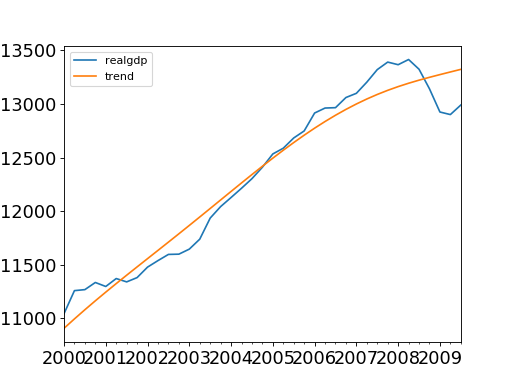

statsmodels.tsa.filters.hp_filter.hpfilter¶
-
statsmodels.tsa.filters.hp_filter.hpfilter(X, lamb=1600)[source]¶ Hodrick-Prescott filter
- Parameters
- Xarray-like
The 1d ndarray timeseries to filter of length (nobs,) or (nobs,1)
- lambfloat
The Hodrick-Prescott smoothing parameter. A value of 1600 is suggested for quarterly data. Ravn and Uhlig suggest using a value of 6.25 (1600/4**4) for annual data and 129600 (1600*3**4) for monthly data.
- Returns
- cyclearray
The estimated cycle in the data given lamb.
- trendarray
The estimated trend in the data given lamb.
See also
statsmodels.tsa.filters.bk_filter.bkfilter,statsmodels.tsa.filters.cf_filter.cffilter,statsmodels.tsa.seasonal.seasonal_decomposeNotes
The HP filter removes a smooth trend, T, from the data X. by solving
- min sum((X[t] - T[t])**2 + lamb*((T[t+1] - T[t]) - (T[t] - T[t-1]))**2)
T t
Here we implemented the HP filter as a ridge-regression rule using scipy.sparse. In this sense, the solution can be written as
T = inv(I - lamb*K’K)X
where I is a nobs x nobs identity matrix, and K is a (nobs-2) x nobs matrix such that
K[i,j] = 1 if i == j or i == j + 2 K[i,j] = -2 if i == j + 1 K[i,j] = 0 otherwise
References
- Hodrick, R.J, and E. C. Prescott. 1980. “Postwar U.S. Business Cycles: An
Empricial Investigation.” Carnegie Mellon University discussion paper no. 451.
- Ravn, M.O and H. Uhlig. 2002. “Notes On Adjusted the Hodrick-Prescott
Filter for the Frequency of Observations.” The Review of Economics and Statistics, 84(2), 371-80.
Examples
>>> import statsmodels.api as sm >>> import pandas as pd >>> dta = sm.datasets.macrodata.load_pandas().data >>> index = pd.DatetimeIndex(start='1959Q1', end='2009Q4', freq='Q') >>> dta.set_index(index, inplace=True)
>>> cycle, trend = sm.tsa.filters.hpfilter(dta.realgdp, 1600) >>> gdp_decomp = dta[['realgdp']] >>> gdp_decomp["cycle"] = cycle >>> gdp_decomp["trend"] = trend
>>> import matplotlib.pyplot as plt >>> fig, ax = plt.subplots() >>> gdp_decomp[["realgdp", "trend"]]["2000-03-31":].plot(ax=ax, ... fontsize=16) >>> plt.show()
(Source code, png, hires.png, pdf)

{kind=link}
{kind=link}